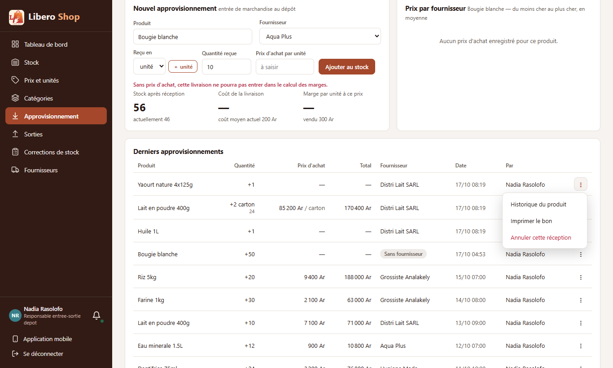
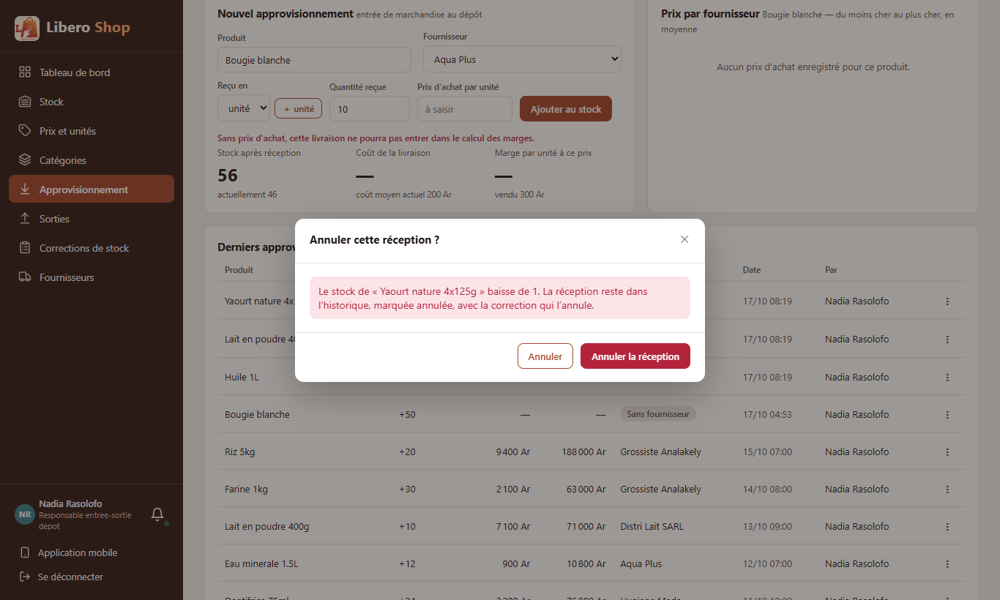
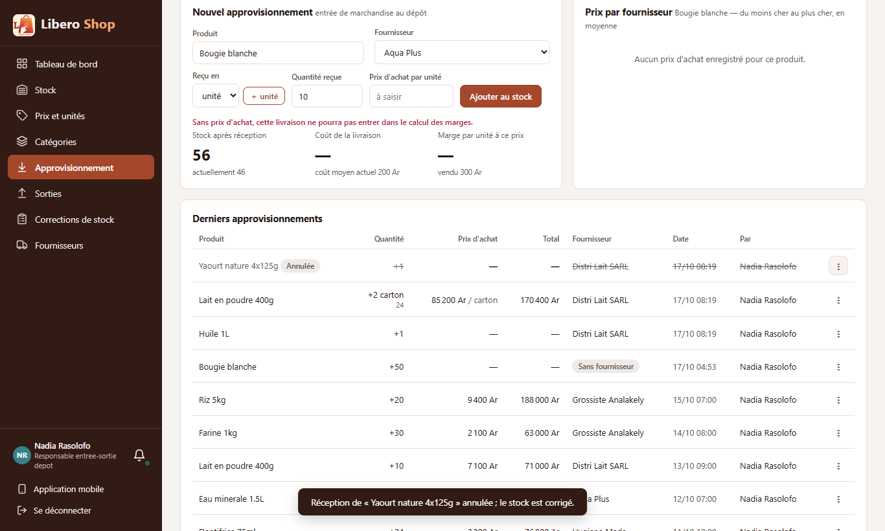
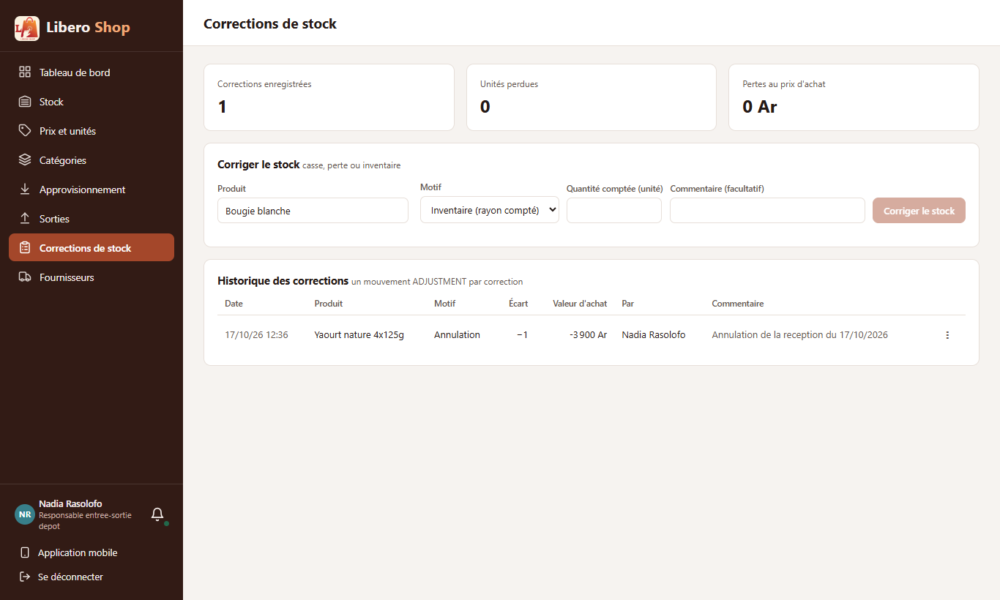

← Tous les comptes rendus de l'interface
UI-33Menu des réceptions et corrections passées
- Chaque ligne de « Derniers approvisionnements » et de l'« Historique des corrections » a maintenant un menu « ⋮ ».
- Historique du produit ouvre l'historique du stock de ce produit ; Imprimer le bon imprime la réception.
- Annuler cette réception / correction ne supprime rien : une correction inverse remet le stock, et la saisie reste dans l'historique, barrée, marquée « Annulée ».
- Une saisie s'annule une seule fois ; une annulation ne s'annule pas ; une annulation qui ferait passer le stock sous zéro (marchandise déjà vendue) est refusée.
- Les annulations ne comptent pas comme des pertes. Une migration au démarrage permet aux boutiques déjà installées de les enregistrer.
1. Le problème
Une réception saisie deux fois, ou sur le mauvais produit, ne pouvait pas être reprise : il fallait inventer une correction à la main, sans lien avec l'erreur. Les lignes de l'historique n'avaient aucune action.
2. Ce qui a été fait
Un nouveau motif de correction, « Annulation », est écrit uniquement par ce geste ; il ne figure pas dans la liste des motifs qu'on choisit, et le serveur refuse qu'on le choisisse à la main. Les compteurs « Unités perdues » et « Pertes au prix d'achat » ne comptent ni les annulations, ni les pertes annulées.
3. La migration des bases existantes
Lors des essais sur la base de démonstration, la première annulation a été refusée par la base (erreur 500). À la création de la table des mouvements, une contrainte avait figé la liste des motifs de l'époque, et la mise à jour automatique du schéma ne la revoit jamais. Les tests passaient parce qu'ils partent d'une base neuve.
Comme pour les types de mouvement (MovementTypeMigration), une migration au démarrage
(AdjustmentReasonMigration) retire cette liste périmée, sans toucher aux lignes ni aux autres contraintes.
Au redémarrage de la démonstration, le journal du serveur l'a confirmé : « Contrainte CONSTRAINT_94F de stock_movement
levée », puis l'annulation a fonctionné.
4. Le résultat en images
Nadia — responsable de dépôt Le yaourt reçu par erreur lors de la livraison de Distri Lait.




5. Limites connues
- Le coût moyen d'achat n'est pas recalculé : le prix de la réception y a été mélangé, et l'en retirer demanderait de rejouer toutes les réceptions suivantes. Le stock, qui était faux, est corrigé.
- Imprimer le bon ouvre une petite fenêtre d'impression ; un navigateur qui bloque les fenêtres ne l'affiche pas.
6. Tableau récapitulatif
| Fichier | Changement |
|---|---|
backend/…/service/MovementCancellationService.java | nouveau : annulation par correction inverse, une seule fois, jamais sous zéro |
backend/…/bootstrap/AdjustmentReasonMigration.java | nouveau : retire la liste de motifs périmée des bases existantes |
backend/…/entity/StockMovement.java, AdjustmentReason.java | date d'annulation ; motif « Annulation » |
backend/…/service/StockService.java | le motif « Annulation » ne se choisit pas à la main |
backend/…/web/StockController.java, web/dto/*Response.java | POST …/supplies/{id}/cancel, …/adjustments/{id}/cancel ; date d'annulation dans les réponses |
ui/…/core/stock/movement-actions.ts, core/utils/print.util.ts | menus, pertes, bon imprimable ; impression |
ui/…/features/depot-manager/supply.component.ts, stock-adjustments.component.ts | « ⋮ » sur les lignes, confirmation, lignes annulées |
| Règle | Test |
|---|---|
| Réception annulée : stock remis, réception marquée | MovementCancellationServiceTest — receptionAnnuleeParUnMouvementInverse |
| Une seule fois ; jamais sous zéro ; une annulation ne s'annule pas ; motif réservé | MovementCancellationServiceTest (4 autres tests) |
| La base ancienne accepte l'annulation après la migration ; une base à jour n'est pas touchée | AdjustmentReasonMigrationTest |
| Menus selon l'état ; pertes sans les annulations ; bon imprimable échappé | movement-actions.spec.ts |
Tests : serveur au vert (615 tests), interface au vert (265 tests).